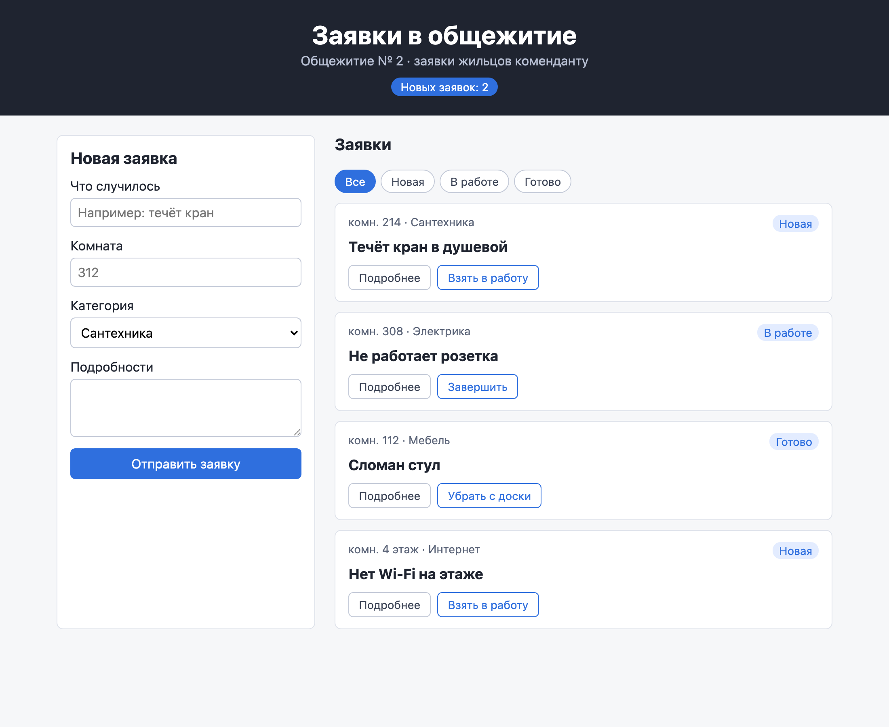
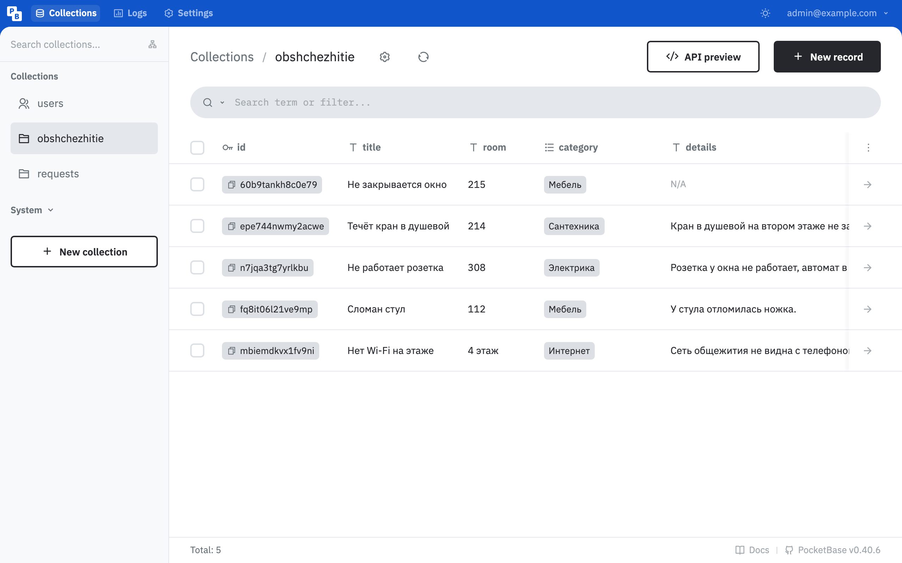
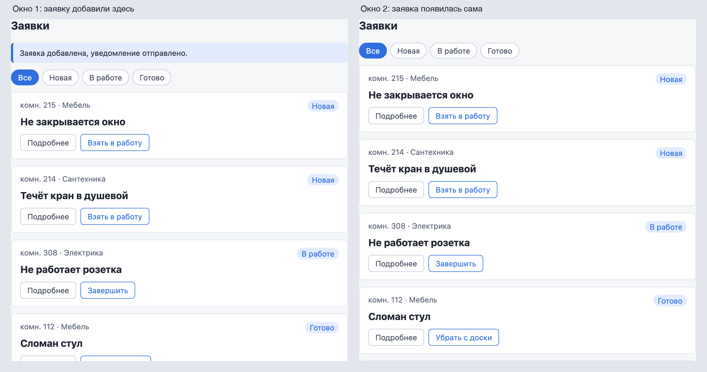

Справочник по Angular и React · модуль 2 · проект
П2
Проект:
доска заявок с базой
На этой странице — задание проекта модуля 2. В проекте модуля 1 студент сделал доску для своей службы колледжа: общежития, студсовета или своей. Заявки той доски жили в одном браузере. В проекте модуля 2 она переезжает на сервер: своя коллекция в PocketBase, загрузка с ошибкой и повтором, хук, обновление по событиям и ИИ-диспетчер со своими категориями. Ниже — требования, порядок работы на примере варианта «Общежитие», дополнительные задания, правила работы с ИИ и порядок защиты.
- Режим ИИ
- Р1 — ИИ объясняет, код пишет студент (глава 0.5)
- Вариант
- Тот же, что в проекте модуля 1
- Основа
- Проект
zayavkiпосле главы 2.5 и тексты своего варианта из проекта модуля 1 - Сдаётся
- Папка проекта, выгрузка двух процессов n8n, журнал работы с ИИ, защита у преподавателя
§1Что меняется по сравнению с проектом 1
Тексты, поле места и категории варианта остаются прежними. Меняется место хранения заявок и всё, что из этого следует. В таблице — что было в проекте модуля 1 и что должно стать.
| Что | Проект модуля 1 | Проект модуля 2 | Глава |
|---|---|---|---|
| Где хранятся заявки | localStorage одного браузера | Своя коллекция в PocketBase | 2.2 |
| Кто что может | Любой — что угодно | Правила: создать только новую, чужие тексты не менять, удалить только готовую | 2.2 |
| Начало работы доски | Список готов сразу | Загрузка, ошибка с кнопкой «Повторить», список | 2.3 |
| Код работы с данными | В App.tsx | В хуке useRequests | 2.4 |
| Изменения из другого окна | Не видны | Появляются без F5 | 2.5 |
| Уведомление | Текст заявки в Telegram | Категория и срочность от модели, кнопка «Взять» | А2 |
Так выглядит вариант «Общежитие» после переезда на PocketBase. Заявки, тексты и категории — из примера проекта модуля 1.

§2Обязательные требования
Работа принимается, если выполнены все пункты. Справа — глава, где разобран нужный механизм.
- Шапка, форма, карточка и категории — своего варианта, как в проекте модуля 1П1
- Своя коллекция в PocketBase: поля как у
requests, варианты категории — свои, обязательные поля отмечены Required2.2 - Правила коллекции как в главе 2.2: чтение всем, создать — только со статусом «Новая», изменить — без названия, места и подробностей, удалить — только «Готово»2.2
- В коллекции не меньше пяти своих заявок разных статусов2.2
- Список загружается из PocketBase, пока его нет — надпись о загрузке2.3
- Если PocketBase остановлен, на доске сообщение и кнопка «Повторить»; после запуска сервера кнопка загружает список2.3
- Добавление, смена статуса и удаление отправляются на сервер и сохраняются после F52.3
- Код данных — в хуке
useRequests; вApp.tsxнетfetchиuseEffectзагрузки2.4 - Заявка, добавленная в одном окне, появляется в другом без F5 и без повторов2.5
- В проекте нет
localStorageи файлаstorage.ts2.3 - ИИ-диспетчер работает со своими категориями: категория от модели записывается в свою коллекцию, в Telegram приходит сообщение с кнопкой «Взять»А2
- Нажатие «Взять» переводит заявку своей коллекции в «В работе», доска показывает это без F5А2
npm run buildиnpm run lintпроходят без ошибок и предупреждений1.1
§3Порядок работы
ДелаемПереносим свой вариант на сервер
- Возьмите основу
Скопируйте папку
zayavkiпосле главы 2.5 в новую, напримерzayavki-obshchezhitie. В новой папке выполнитеnpm install. Остановите доску ИТ-отдела (Ctrl+C в её терминале) и запустите свою:npm run dev. Доска должна работать на порту 5173 — с этого адреса n8n принимает заявки. - Перенесите тексты варианта
Из своего проекта модуля 1 скопируйте
Header.tsx,RequestCard.tsxиRequestForm.tsxвsrc/components. Вrequests.tsзамените только типCategoryна свои четыре категории: остальное в этом файле — из главы 2.5.src/requests.ts · строка 3 в варианте «Общежитие» export type Category = 'Сантехника' | 'Электрика' | 'Мебель' | 'Интернет'
- Создайте коллекцию
В панели PocketBase создайте коллекцию с именем своего варианта латиницей, например
obshchezhitie, так же, какrequestsв главе 2.2 §3. В полеcategoryвпишите свои четыре категории. Настройте пять правил, как в главе 2.2 §5, и добавьте пять заявок разных статусов.
Коллекция obshchezhitie в панели PocketBase - Подключите доску к своей коллекции
Имя коллекции записано в двух файлах. Замените
requestsна имя своей коллекции вapi.ts(строка 3) иrealtime.ts(строка 12).src/api.ts · строка 3 const API_URL = 'http://localhost:8090/api/collections/obshchezhitie/records'
src/realtime.ts · строка 12 const pending = pb.collection('obshchezhitie').subscribe<RequestItem>('*', onEvent)
- Проверьте два окна
Обновите страницу: на доске заявки своей коллекции. Откройте второе окно и добавьте заявку в первом — она должна появиться в обоих по одному разу.

Заявка из окна 1 появилась в окне 2 - Проверьте ошибку
Остановите PocketBase (
docker compose stop pocketbase), обновите доску — должны появиться сообщение и кнопка «Повторить». Запустите PocketBase (docker compose start pocketbase) и нажмите «Повторить». - Настройте ИИ-диспетчер
В n8n откройте процесс «ИИ-диспетчер». В узле Модель замените категории в двух местах: в тексте инструкции (
role: 'system') и в спискеenum. Замените подпись «Кабинет» в узле Telegram на своё поле места. В узле Категория в базу заменитеrequestsв адресе на имя своей коллекции. Сохраните и опубликуйте процесс заново. - Настройте кнопку «Взять»
В процессе «Кнопка «Взять»» в узле Статус в базу замените
requestsв адресе на имя своей коллекции. Сохраните и опубликуйте. - Проверьте весь путь
Добавьте заявку с доски, дождитесь сообщения бота, нажмите «Взять» и проверьте статус на доске. Пройдите список из §2 по порядку. Во втором терминале выполните
npm run buildиnpm run lint.
Нажатия кнопок забирает из Telegram только один процесс: getUpdates отдаёт каждое нажатие один раз, тому, кто первым спросил. Если опубликованы два процесса «Кнопка «Взять»» с одним ботом, нажатия случайно достаются то одному, то другому. Поэтому для своего варианта правятся процессы со страницы автоматизации, а копии не создаются.
§4Дополнительные задания
Задания выполняются по выбору; сколько их нужно для какой оценки, сообщает преподаватель.
| Задание | Что получится | Подсказка |
|---|---|---|
| Срочные заявки | Карточки, которые модель назвала срочными, выделены рамкой | Поле urgent типа Bool в коллекции; в узле «Категория в базу» отправлять { category, urgent }; в карточке класс по условию (глава 1.5). Правило Update менять не нужно: оно запрещает только title, room, details |
| Кто взял | На карточке «Взял: имя мастера» | Поле master типа Plain text; в узле «Статус в базу» отправлять ещё master из узла «Кто и что нажал» |
| Время заявки | На карточке «создана 30.10 в 07:25» | Поле created приходит в каждой записи; добавить его в тип и вывести через new Date(created).toLocaleString('ru') |
| Поиск по названию | Над списком поле, список сужается по мере ввода | Как в проекте модуля 1: управляемое поле и условие в visible |
| Опрос вместо событий | Сравнение двух способов из главы 2.5 на своей доске | Во втором эффекте setInterval раз в 10 секунд меняет attempt; в Network сравнить число запросов за минуту с подпиской |
§5Работа с ИИ
Проект выполняется в режиме Р1 из главы 0.5, как проект модуля 1: ИИ объясняет, код пишет студент, автодополнение ИИ в редакторе отключено. Журнал ai-log.md ведётся так же. Токен бота, номер чата и пароль суперпользователя PocketBase в чат ИИ не вставляются.
Модель qwen2.5:3b в автоматизации — часть продукта, её ответы в журнал не пишутся. В журнал записывается, если менялась инструкция модели: что было, что стало и сколько заявок из проверочных она после этого разобрала верно.
§6Сдача и защита
ДелаемГотовим работу к сдаче
- Проверьте сборку
Во втором терминале выполните обе команды. Ошибок и предупреждений быть не должно.
Терминал · папка проекта npm run build npm run lint
- Проверьте, что секретов нет в коде
В VS Code нажмите Ctrl+Shift+F и найдите в папке проекта начало своего токена и пароль суперпользователя PocketBase. Совпадений быть не должно.
- Выгрузите процессы n8n
Откройте каждый из двух процессов, нажмите … рядом с названием и выберите Export JSON. n8n сохранит файл процесса. Учётные данные бота в файл не попадают, номер чата — попадает: перед сдачей сотрите его в файле «ИИ-диспетчера» (поле
chatId). - Соберите архив
Удалите папки
node_modulesиdist. Упакуйте папку проекта вместе сai-log.mdи двумя файлами процессов. Файл.envиз папкиavtomatizaciyaв архив не кладётся. - Приложите снимки
Снимок сообщения бота с кнопкой и снимок после нажатия «Взять».
РазбираемсяКак проходит защита
На защите студент запускает PocketBase, n8n и доску на своём компьютере и проходит список из §2: два окна, остановленный сервер, сообщение бота, нажатие кнопки. Затем преподаватель указывает на строки кода и спрашивает, что они делают и почему так написаны. Ответ «так написал ИИ» оценивается как отсутствие ответа. Примеры вопросов:
- Что ответит PocketBase, если отправить заявку со статусом «Готово», и какое правило за это отвечает?
- Зачем в эффекте загрузки флажок
ignore? Что было бы без него? - Почему
setLoading(false)стоит послеtryиcatch, а не внутриtry? - Что изменится, если вызвать
useRequestsещё и в шапке? - Почему своя новая заявка не появляется на доске дважды?
- Зачем запросу к модели JSON-схема и что будет без неё?
- Почему нажатия кнопки обрабатываются раз в 10 секунд, а не сразу?
- Модель поставила неверную категорию. Что сделает мастер и увидит ли это студент, который отправил заявку?